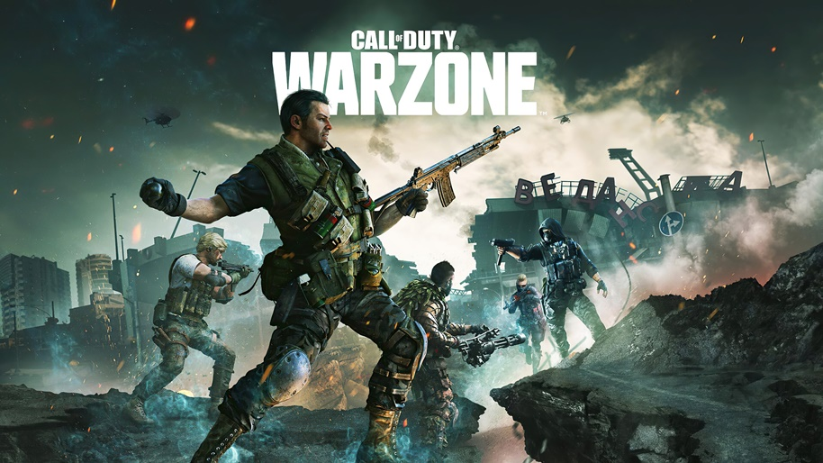
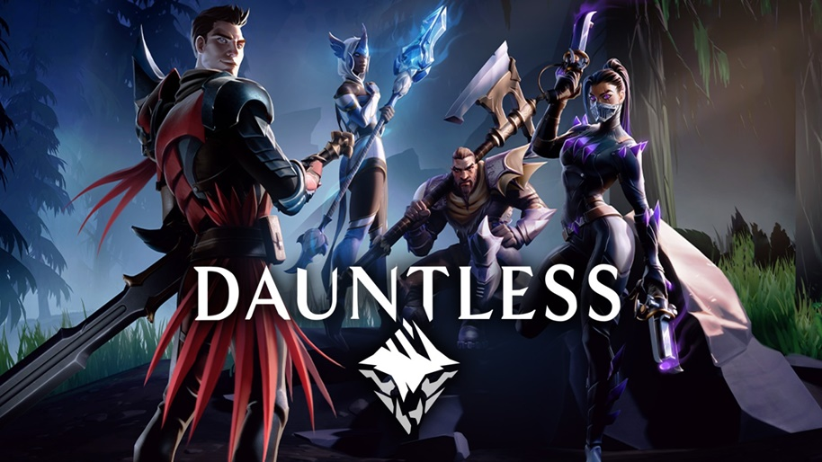
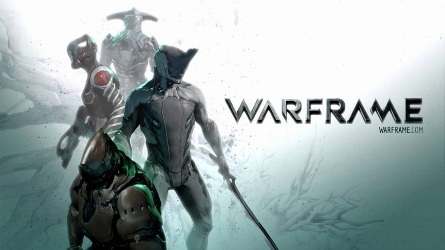

1. Warzone
Call of duty um jogo eletrônico free-to-play do gênero battle royale desenvolvido pela Infinity Ward e Raven Software e publicado pela Activision. Warzone foi lançado gratuitamente como parte do jogo Call of Duty: Modern Warfare, de 2019, em 10 de março de 2020, após uma série de glitches e vazamentos no mês anterior. No jogo você é lançado em um mapa com 150 jogadores onde seu objetivo é sobreviver até o final usando ultilitarias liberado por caixas ou ultulizando itens qua são achados jogados no mapas ou de algum corpo de um jogador morto.
O jogo se encontra disponivel em Xbox Series X e Series S, PlayStation 4, PlayStation 5, Microsoft Windows.
Trailer Oficial2. Dauntless
Dauntless é um jogo de RPG de ação gratuito desenvolvido pela Phoenix Labs e publicado e distribuído pela Epic Games. Sua versão beta foi lançada em 2018. No jogo você batalhará contra crituras para ficar mais forte e poderá farmar para fazer armaduras.
Lançado oficialmente em 26 de Setembro de 2019 para Microsoft Windows, PlayStation 4, Xbox One e em 10 de dezembro de 2019 para Nintendo Switch, o jogo conta hoje com 3 modos diferentes de jogo, que você poderá jogar tanto sozinho quanto com seus amigos.
Trailer Oficial3. Destiny 2

Destiny 2 é um jogo eletrônico de tiro em primeira pessoa multijogador desenvolvido pela Bungie e publicado pela Activision. Foi lançado para PlayStation 4 e Xbox One em 6 de setembro de 2017, seguido por uma versão para Microsoft Windows no mês seguinte. É a continuação de Destiny e de suas expansões subsequentes.Destiny é um FPS, ou se preferirem, jogo de ação na primeira pessoa. Ou seja, em termos de mecânicas funciona um pouco como Halo (criado pela mesma produtora, Bungie), Call of Duty e Battlefield, mas apenas a um nível superficial.
Disponivel para jogar em PlayStation 4, Xbox One, Xbox Series X e Series S, Google Stadia, PlayStation 5, Microsoft Windows
Trailer Oficial4. Matrix Awekens: an unreal egine 5 experience

A Unreal Engine 5 foi lançada nesta terça-feira "5 de abril de 2022" pela Epic Games. O famoso motor gráfico chega em sua quinta versão com o objetivo de gerar gráficos que se confundem com a vida real, como mostrado na demo The Matrix Awakens: An Unreal Engine 5 Experience.Parte cinematográfica, parte experiência jogável, a demo foi criada por membros da equipe original do filme The Matrix, incluindo Lana Wachowski, James McTeigue e John Gaeta, em colaboração com equipes tanto da Epic Games quanto de seus parceiros.
O elemento cinematográfico traz réplicas digitais de Keanu Reeves e Carrie Anne-Moss como seres humanos digitais incrivelmente realistas. A partir daí, a demo se transforma em uma experiência interativa de perseguições de carros e um jogo de tiro em terceira pessoa acelerado e cheio de ação.Estas sequências são completamente dinâmicas e o mundo reage às suas ações de forma totalmente orgânica. Isto se deve ao Chaos, o sistema de física de alto desempenho da Unreal Engine, que pode proporcionar níveis de destruição com qualidade cinematográfica em tempo real, além de simular o movimento de tecidos, cabelos, veículos e muito mais.
Desenvolvido para PlayStation 5 e Xbox Series X/S.
Trailer5. warframer
Warframe é um jogo online multiplayer de tiro em terceira pessoa gratuito para jogar desenvolvido e publicado pela Digital Extremes. Lançado pela primeira vez para computadores pessoais Windows em março de 2013, foi posteriormente portado para PlayStation 4 em novembro de 2013, Xbox One em setembro de 2014, Nintendo Switch em novembro de 2018, PlayStation 5 em novembro de 2020, e Xbox Series X/S em abril de 2021. O suporte para reprodução multiplataforma e cross-save, bem como portas para dispositivos móveis, estão previstos para 2022. O jogo está em um estado de longo prazo de beta aberto.
Em Warframe, os jogadores controlam membros dos Tenno, uma raça de guerreiros antigos que acordaram de séculos de animação suspensa para o futuro da Terra para se encontrar em guerra no sistema planetário com diferentes facções. Os Tenno usam seus warframes alimentados junto com uma variedade de armas e habilidades para completar missões. Embora muitas das missões do jogo usem níveis gerados proceduralmente, atualizações mais novas incluíram grandes áreas de mundo aberto semelhantes a outros jogos online massivamente multiplayer, bem como algumas missões específicas de história com design de nível fixo.
Disponivel para PlayStation 4, Nintendo Switch, Xbox One, PlayStation 5, Microsoft Windows, Xbox Series X e Series S
Trailer Oficial